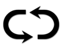

Willkommen bei LUCK OF RA einem Videospielautomat mit dem Motto altägyptische Zivilisation. Das Spiel verfügt über verschiedene Spielmodi, Walzensynchronisation, Freispiele, Glücksspiel und viele weitere spannende Funktionen.
ÜBER DAS SPIEL
LUCK OF RA wird mit 10 festen Gewinnlinien gespielt. Das Spiel hat zehn reguläre Symbole, die sich auszahlen, wenn drei oder mehr auf benachbarten Walzen aufgereiht sind, beginnend von der linken Position auf einer Gewinnlinie.
SPIELMODI : DER SPIELER KANN WÄHLEN, OB ER DEN STANDARD, SUPER ODER MEGA SPIELMODUS NUTZEN MÖCHTE.
Standard spielmodus: verwendet die standard-drehtaste. Wenn sie diesen modus wählen, spielen sie ein normales spiel.
Super spielmodus: verwendet die verbesserte drehtaste. Wählen sie diesen modus, um den pfeil zu drehen und die synchronisation der walzen mit jeder drehung zu aktivieren. Wenn der pfeil in der grünen zone landet, drehen sich die walzen mit aktiven megasymbolen. Wenn der pfeil in der roten zone landet, verlieren sie den einsatz.
Mega spielmodus: Verwendet die verbesserte drehtaste. Wählen sie diesen modus, um den pfeil zu drehen und direkt zu den freispielen zu gelangen. Wenn der pfeil in der grünen zone landet, drehen sich die walzen mit dem mega scattersymbol in voller ansicht, was einen direkten zugang zu den freispielen ermöglicht. Wenn der pfeil in der roten zone landet, verlieren sie den einsatz.
FREISPIELE
Rollsymbol in vollansicht löst 8 freispiele aus. Vor dem freispielbonus werden 2 verschiedene symbole ausgewählt, die in den freispielen verwendet werden. Ausgewählte symbole dienen als spezielle erweiternde symbole. Wenn sondersymbole auf 2, 3 oder mehr walzen vorhanden sind und nachdem gewinne für reguläre gewinnkombinationen erzielt wurden, erweitern sich die sondersymbole, um alle vertikalen positionen auf den walzen abzudecken, die vorhanden sind. Das niedrigere zahlungssymbol wird zuerst aktiv, und sobald es bezahlt ist, wird das hoch zahlende symbol aktiv. Während der freispiele wirken die synchronisierten walzen bei jedem spin und verbessern möglicherweise die speziellen erweiternden symbole. Während der freispiele können weitere freispiele gewonnen werden, wenn der 3x3-scatter vollständig in sichtweite landet. 8 zusätzliche freispiele werden mit den gleichen erweiternden symbolen vergeben.
BONUSKAUF
Das feature kann zu dem preis gekauft werden, der an dem zähler im "bonuskauf" angezeigt wird. Wenn der verfügbare saldo dem bonuskaufpreis entspricht, dann geht der saldo auf null und das feature wird automatisch ausgelöst.
SETZEN
Das spiel verfügt über eine optionale spielrunde, die es dem spieler ermöglicht, seinen gesamtpreis im hauptspiel nur durch richtiges erraten der farbe oder der kartenfarbei einer versteckten karte zu multiplizieren. Die korrekte farbe zahlt x2 und die richtige kartenfarbe zahlt x4. Die spielrunde kann bis zu 5 mal hintereinander oder bis zu einem höchstbetrag von 250.000 € oder dem entsprechenden betrag in einer anderen währung gespielt werden.
WIE MAN SPIELT
-
Wähle die Bezeichnung deines Einsatzes/Münze.
-
Klicke (bei Desktop) oder tippe (bei Mobilgerät) auf den Spin-Button, um einen Spielzyklus zu starten.
SPIELBUTTONS
|
Zeichen |
Desktop |
Mobilgerät |
Aktion |
|
|
DREHEN | DREHEN | Startet einen Einzelzyklus |
| Max. Einsatz | (enthalten im Bildschirm für Einsatzauswahl im Menü der Einstellungen) | Stellt die Einsatzkonfiguration auf das maximale Einsatzlevel. Zum Starten Spin-Button drücken. | |
|  | Autoplay | Für Autoplay Spin gedrückt halten (oder im Menü der Einstellungen enthalten) | Öffnet das Menü und zeigt alle im Spiel verfügbaren Autoplay-Optionen, zum Starten mehrerer Zyklen gleichzeitig. |
|
|
Einsatzauswahl | Einsatzauswahl (oder im Menü der Einstellungen enthalten) | Zeigt die Einsatzoptionen an, damit der Spieler seinen Wetteinsatz wählen kann. |
|
|
Einstellungen | Einstellungen | Öffnet ein unabhängiges Menü mit Einstellungen mit folgenden Optionen: Home; Ton; Spieleinstellungen; Verlauf; Info/Hilfe und Kassierer (wenn erforderlich) |
|
|
Ton | (Haupteinstellungen sind im Menü der Einstellungen verfügbar) | Desktop - öffnet das Menü der Toneinstellungen, damit der Spieler die Musik und die Soundeffekte unabhängig ein- und ausschalten kann. |
|
|
Turbo-Spiel | (verfügbar im Menü der Spieleinstellungen) | Ändert die Geschwindigkeit der Walzen zu Quickspin |

|
Gamble | SETZEN | Leitet das Gamble-Feature ein, nachdem das Basisspiel gewonnen wurde. |
|
|
EINSAMMELN | EINSAMMELN | Gewinnbetrag einsammeln und das Gamblefeature überspringen. |
 |
SPIELMODI | SPIELMODI | Wählen Sie den Spielmodus, in dem der Spieler wetten möchte. |
EINSTELLUNGSBUTTONS
| Symbol | Zeichen | Verhalten |
| Spielverlauf |
|
Zeigt dem Spieler eine Liste der gespielten Spielzyklen während der Sitzung. |
| Einsatz-Einstellungen |
|
Hier kann der Spieler den Wert des Einsatzes für das Spiel festlegen, oder eine der anderen verfügbaren Optionen auswählen. |
| Autoplays |
|
Öffnet die Seite, auf der die unterschiedlichen standardmäßigen oder erweiterten Autoplayoptionen ausgewählt und gestartet werden können, einschließlich Verlustlimit (wenn anwendbar). |
| Spieleinstellungen |
|
Zeigt die allgemeinen verfügbaren Einstellungen (zum Beispiel vom Spieler wählbare Toneinstellungen, mit denen der Spieler wählen kann, welche Töne während des Spiels zu hören sind). |
| Home |
|
Beendet das aktuelle Spiel (nach einer letzten Abfrage) und kehrt zurück zur Menüseite des Hauptspiels. |
ANDERE SPIELINFOS
-
Mehrere Gewinne auf unterschiedlichen Gewinnlinien werden zusammengezählt und dem Spieler ausgezahlt.
-
Münzwert - Zeigt den theoretischen Preis für den Einsatz mit den derzeitigen Einstellungen an. Alle Gewinne werden als Münzen angezeigt, die mit dem Münzwert multipliziert werden, um einen Auszahlungsgewinn zu erhalten. Cash/Münze - Zeigt die Kontobilanz je nach Wahl des Spielers entweder als Cash (Geldwert) oder Münzen (Anzahl der Gutschriften) an. Die Standardeinstellung ist die Cash-Einstellung. Die Umwandlung von Bargeld in Münzen und umgekehrt erfolgt mit 2 Dezimalwerten, um die nächstgelegenen Originalwerte zu erreichen, aber im Spiel wird die Münzumrechnung immer in ganzen Zahlen angezeigt.
-
Wetteinsatz - Zeigt den Wert des Wetteinsatzes, der aktuell eingestellt ist. Die Einsatzgröße ist 1 Münze multipliziert mit dem Einsatzmultiplikator.
-
GESAMTEINSATZ IST DER MÜNZWERT MULTIPLIZIERT MIT DEM EINSATZMULTIPLIKATOR, DER 40 MÜNZEN IST.
-
Max. Wetteinsatz (NUR bei Desktop) - Stellt den höchsten verfügbaren Münzwert ein.
-
Spinbutton - Startet das Spiel. Wenn sich die Walzen drehen, wird der Spinbutton zum Turbo-Stopp-Button. Drücke auf den Turbo-Stopp-Button, um die Walzen sofort zu stoppen.
-
Autoplay - Man kann das Spiel so einstellen, dass man nicht jedes Mal den Spinbutton drücken muss. Wähle die Anzahl der Runden, die automatisch gespielt werden sollen, wenn du Autoplay drückst (oder öffne das Autoplay-Menü, indem die den Spinbutton gedrückt hältst (bei Mobilgerät)). Wenn diese Optionen verfügbar sind, kann man in den Spieleinstellungen bestimmte Bedingungen festlegen, unter denen das Autoplay-Spiel angehalten wird. Ein Verlustlimit schützt den Spieler in einigen Spielversionen davor, mehr als das festgelegte Verlustlimit in einer Autoplay-Runde zu verlieren. Wenn du die Autoplay-Runde von Hand anhalten möchtest, drücke auf den Stopp-Autoplay-Button.
-
Gewinn - Zeigt den aktuellen oder letzten ausgezahlten Gewinn an.
-
Cash/Münze - Zeigt die Kontobilanz je nach Wahl des Spielers entweder als Cash (Geldwert) oder Münzen (Anzahl der Gutschriften) an. Die Standardeinstellung ist die Cash-Einstellung.
-
Die Umwandlung von Bargeld in Münzen und umgekehrt erfolgt mit 2 Dezimalwerten, um die nächstgelegenen Originalwerte zu erreichen, aber im Spiel wird die Münzumrechnung immer in ganzen Zahlen angezeigt.
RÜCKFLUSSQUOTE
-
Die theoretische Gesamtrückflussquote an den Spieler liegt bei 96,.01 %
ZUSÄTZLICHE INFORMATIONEN
-
Alle Gewinnkombinationen werden auf einer Gewinnlinie von links nach rechts ausgezahlt, wobei jeweils auf Walze 1 begonnen wird, außer bei Scatterkombinationen, die es an jeder Position geben kann.
-
Erreichte Gewinne in den Funktionen werden zusätzlich zu den Kombinationswegen ausgezahlt.
-
Sollte die Hardware/Software des Spiels nicht ordnungsgemäß funktionieren, werden alle betroffenen Spielwetten und Auszahlungen für nichtig erklärt und alle betroffenen Einsätze werden zurückgezahlt.
-
Der Höchstgewinn im Spiel hat eine Obergrenze von gleichwertig 250.000,- €.